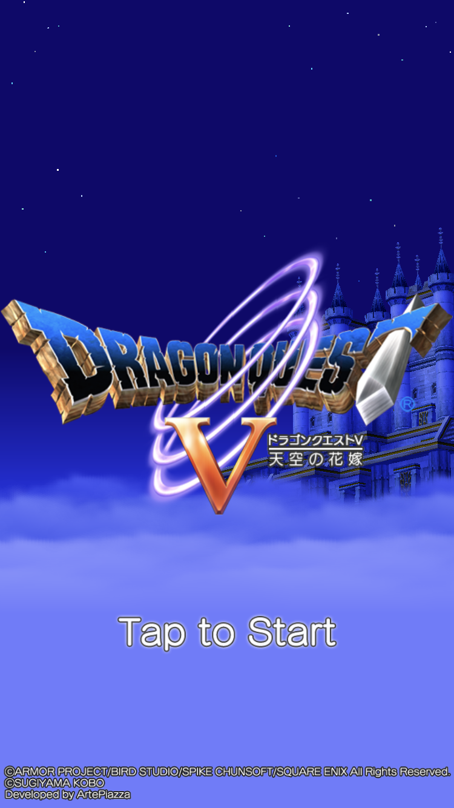

Profile
椙本 洸希
生年月日
2002年12月3日
学校名
東京デザインテクノロジーセンター専門学校
学年
2年生
ニックネーム
えのき
出身地
富山
長所
できないことを誤魔化す能力
短所
できないことをできないままにすること
Favorite
好きなwebサイト
好きなアプリ
ドラクエV
好きな色
ムラサキ
好きな動物
- ビーバー
- 猫
- サル
好きな食べ物
馬刺し
好きな季節
春夏秋冬
好きな場所
実家
好きな言葉
青天の霹靂
好きな人物
10年くらい前に閉じたパン屋のおばあちゃん
好きな教科
現代文
好きなスポーツ
バスケ
好きな本(マンガ/小説/他)
事情(中崎淳)、No.6、ツバサ・クロニクル
好きな映画/ドラマ/アニメ
Blue Giant、宇宙兄弟
好きな番組(テレビ/ラジオ/ネット放送)
ピザラジ
好きなゲーム
マジカルデスペア